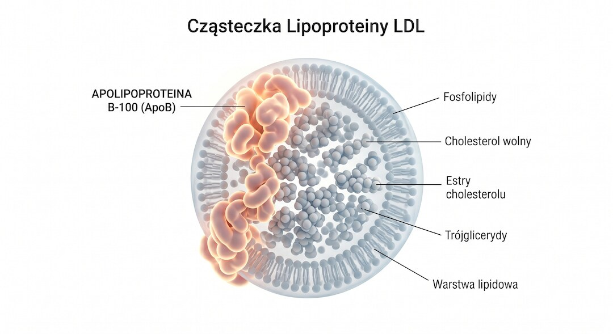
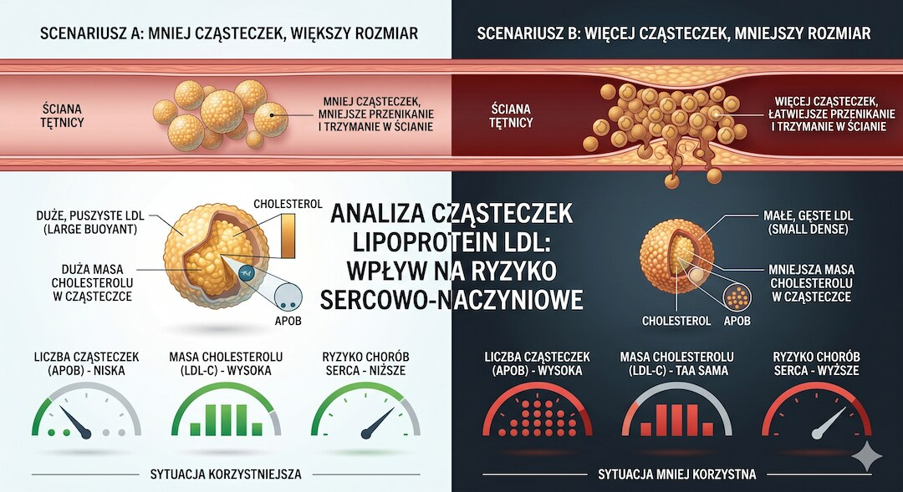
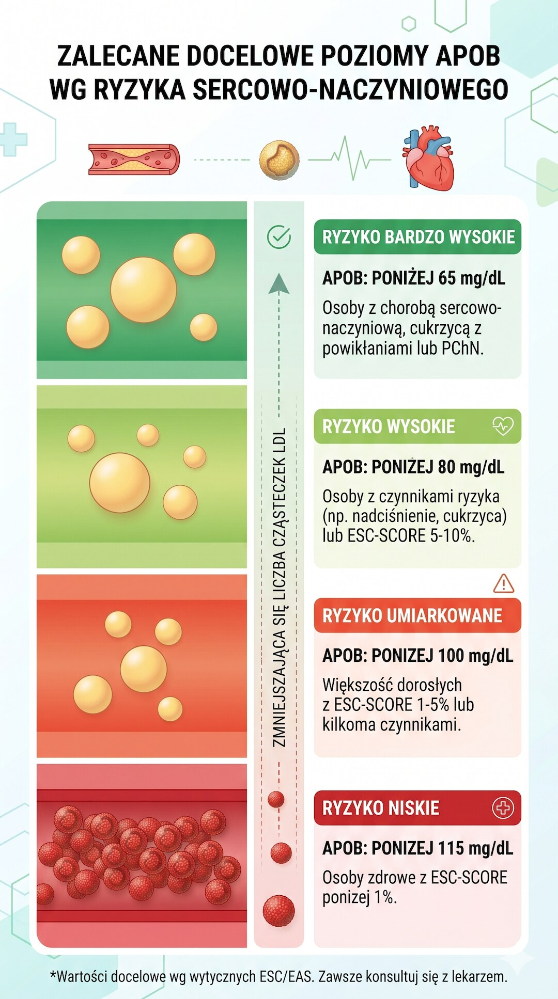
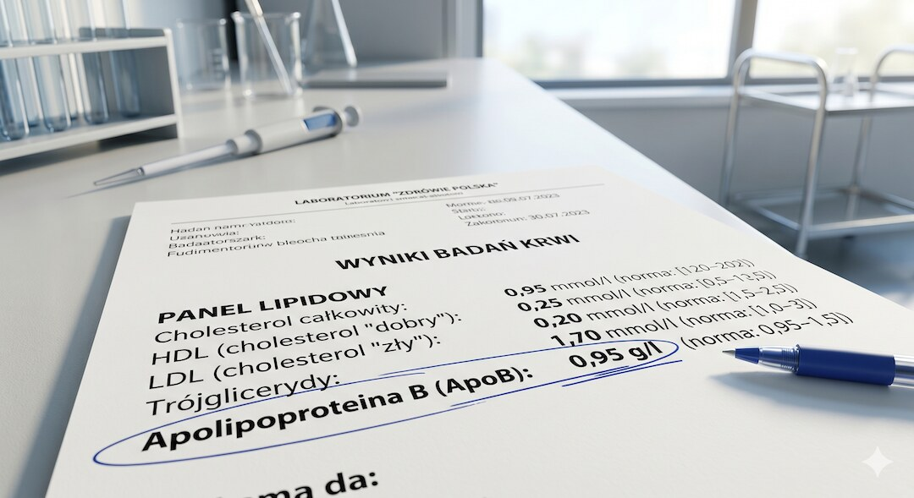

LDL masz w normie, a lekarz i tak kręci głową. Albo odwrotnie – LDL trochę za wysoki, ale ogólne ryzyko ma być niskie. Skąd ta sprzeczność? Badanie ApoB mierzy nie masę cholesterolu, lecz liczbę cząsteczek, które realnie atakują ściany tętnic. To różnica jak między ważeniem ciężarówek a liczeniem ich – i właśnie dlatego ApoB coraz częściej uzupełnia samo LDL w ocenie ryzyka sercowo-naczyniowego.
Szybka odpowiedź
ApoB to kluczowe badanie po pięćdziesiątce, które mierzy rzeczywistą liczbę szkodliwych cząsteczek we krwi, a nie ich masę jak klasyczny LDL. Docelowo wynik powinien wynosić poniżej 80 mg/dL dla wysokiego ryzyka. Badanie wykonasz w każdym laboratorium za około 60-100 zł bez skierowania, a wynik dostaniesz w dwa dni.
Kluczowe wnioski
- ApoB mierzy liczbę aterogennych cząsteczek lipoprotein, nie ich masę – dlatego jest czulszym wskaźnikiem ryzyka niż samo LDL-C.
- Norma laboratoryjna (55–140 mg/dL) to nie to samo co optymalny cel: osoby z wysokim ryzykiem sercowym powinny dążyć do ApoB poniżej 80 mg/dL.
- Badanie kosztuje 60–100 zł, nie wymaga skierowania i trwa tyle co zwykłe pobranie krwi – wynik jest gotowy w 1–2 dni.
- Szczególnie warto badać ApoB, gdy masz cukrzycę, nadwagę, wysokie trójglicerydy lub podejrzenie hipercholesterolemii rodzinnej – właśnie wtedy LDL może niedoszacowywać ryzyka.
Czym właściwie jest ApoB i co tak naprawdę mierzy?
Apolipoproteina B (ApoB) to białko strukturalne lipoprotein aterogennych – cząsteczek, które pchają cholesterol w ściany tętnic. Kluczowa właściwość: każda cząsteczka lipoprotein aterogennych – LDL, VLDL, IDL czy lipoproteina(a) – niesie dokładnie jeden egzemplarz ApoB. Dzięki temu stężenie ApoB we krwi jest bezpośrednim pomiarem liczby cząsteczek mogących wywołać miażdżycę, niezależnie od tego, ile cholesterolu każda aktualnie transportuje.
Standardowy lipidogram mierzy masę cholesterolu – ile miligramów substancji tłuszczowej krąży we krwi. ApoB mierzy coś innego: ile ciężarówek jeździ po twoich tętnicach. Dwie osoby z identycznym LDL-C mogą mieć zupełnie różną liczbę cząsteczek LDL – jedne większe i mniej aktywne, drugie małe, gęste i bardziej aterogenne. Tylko ApoB pokaże tę różnicę. Jeśli chcesz pogłębić temat standardowego lipidogramu i interpretacji jego wyników, mamy oddzielny artykuł na ten temat. Więcej porad zdrowotnych po 50.

Czy ApoB naprawdę przewiduje ryzyko lepiej niż LDL-cholesterol?
To nie jest pytanie retoryczne – jest na nie konkretna odpowiedź z badań. Duża metaanaliza z Circulation wykazała, że ApoB jest znacznie silniejszym predyktorem ryzyka niż LDL-C. Z tego powodu Europejskie Towarzystwo Kardiologiczne już w 2019 roku uznało w wytycznych ApoB za najdokładniejszy wskaźnik adekwatności leczenia u pacjentów podwyższonego ryzyka.
Skąd ta rozbieżność między LDL a ApoB w praktyce? Najczęściej pojawia się u osób z podwyższonymi trójglicerydami, cukrzycą, otyłością lub insulinoopornością. W tych przypadkach we krwi krąży wiele małych, gęstych cząsteczek LDL bogatych w ApoB, ale ubogich w cholesterol – więc LDL-C wychodzi w granicach normy, a prawdziwa liczba aterogennych pocisków jest wysoka. ApoB to właśnie demaskuje. Więcej o tym, dlaczego samo LDL może nie wystarczyć, znajdziesz w artykule o cholesterolu LDL po pięćdziesiątce.

Jakie normy ApoB obowiązują i skąd je wziąć?
Tu zaczyna się zamieszanie, bo wynik z laboratorium podaje zakres referencyjny, a kardiolodzy posługują się celami terapeutycznymi – i to są dwie różne rzeczy. Zakres referencyjny laboratoryjny (oparty na populacji ogólnej) wynosi zazwyczaj 55–140 mg/dL dla mężczyzn i 55–125 mg/dL dla kobiet. Tyle że mieszczenie się w normie laboratoryjnej nie oznacza automatycznie małego ryzyka sercowego.
Wytyczne towarzystw naukowych definiują cele terapeutyczne zależne od profilu ryzyka. National Lipid Association (2025) rekomenduje: poniżej 90 mg/dL dla ryzyka pośredniego, poniżej 70 mg/dL dla ryzyka wysokiego i poniżej 60 mg/dL dla ryzyka bardzo wysokiego. ESC/EAS wskazuje cel poniżej 80 mg/dL dla ryzyka wysokiego i poniżej 70 mg/dL dla bardzo wysokiego. AHA/ACC traktuje wartość powyżej 130 mg/dL jako czynnik zaostrzający ryzyko. Przelicznik jest prosty: jeśli wynik jest podany w g/L (jak często w polskich laboratoriach), pomnóż przez 100, żeby uzyskać mg/dL – czyli 0,98 g/L to 98 mg/dL.
Zestawienie celów terapeutycznych według grup ryzyka:
- Ryzyko niskie / brak czynników ryzyka: cel poniżej 100 mg/dL (1,0 g/L)
- Ryzyko pośrednie (np. 1–2 czynniki ryzyka): cel poniżej 90 mg/dL (0,90 g/L) – wg NLA 2025
- Ryzyko wysokie (np. cukrzyca, nadciśnienie + inne czynniki): cel poniżej 80 mg/dL (0,80 g/L)
- Ryzyko bardzo wysokie (przebyty zawał, udar, hipercholesterolemia rodzinna): cel poniżej 70 mg/dL (0,70 g/L) lub nawet poniżej 60 mg/dL

Jak przygotować się do badania ApoB i jak wygląda pobranie?
Badanie jest proste i niczym nie różni się od zwykłego pobrania krwi. Kilka zasad, żeby wynik był wiarygodny: przychodzisz na czczo, czyli ostatni posiłek najdalej 8–12 godzin wcześniej. Poprzedniego dnia unikasz tłustych potraw i alkoholu – obydwa mogą tymczasowo zaburzyć profil lipidowy. Najlepiej rano, nie później niż do godziny 10. Przed pobraniem chwila siedzenia w poczekalni i dwie szklanki wody – to tyle.
Wynik jest gotowy zazwyczaj w ciągu 1–2 dni roboczych. Badanie możesz zlecić sobie samodzielnie bez skierowania w każdym komercyjnym laboratorium diagnostycznym. Skierowanie od lekarza otwiera możliwość refundacji z NFZ, ale w praktyce jest rzadko wystawiane, bo ApoB nie jest badaniem rutynowym w polskim systemie. Warto łączyć je z pełnym lipidogramem, żeby interpretacja miała sens.
Ile kosztuje badanie ApoB w Polsce i gdzie je wykonać?
Cena badania ApoB w polskich laboratoriach komercyjnych waha się w granicach 60–100 zł. Synevo wycenia je od 71 zł, prywatne sieci takie jak ALAB, Diagnostyka czy Medicover oferują podobne stawki. Nie potrzebujesz skierowania – po prostu zamawiasz test online lub w punkcie pobrań i gotowe. W ramach NFZ badanie jest co do zasady możliwe, ale wymaga skierowania i konkretnego wskazania medycznego; w praktyce lekarze POZ rzadko je wystawiają.
Finansowo najbardziej opłaca się łączyć ApoB z lipidogramem przy jednym pobraniu – oszczędzasz czas i nieraz dostaniesz niższą cenę za pakiet. Jeśli interesujesz się prewencją chorób sercowo-naczyniowych, o czym piszemy szerzej w artykule o ryzyku sercowym po 50-tce, dorzucenie ApoB do corocznego przeglądu krwi to 70–80 zł dobrze wydanych.

Jak czytać wynik ApoB i co robić, gdy jest poza normą?
Wynik ApoB nigdy nie istnieje w próżni – liczy się razem z lipidogramem, profilem ryzyka i ewentualną Lp(a). Wysoki ApoB przy prawidłowym LDL-C oznacza zwykle dużo małych, gęstych cząsteczek LDL, bardziej aterogennych niż duże. Odwrotna sytuacja – wyższe LDL-C przy niskim ApoB – sugeruje większe, mniej aktywne cząstki. Dlatego oba pomiary razem dają obraz, którego żaden z nich osobno nie pokaże.
Co robić przy podwyższonym ApoB? Nie ma jednej odpowiedzi, bo zależy od profilu ryzyka. Lekarz ocenia, czy poziom wynika ze stylu życia (dieta bogata w nasycone tłuszcze, siedzący tryb życia, otyłość) czy z genetyki (np. hipercholesterolemia rodzinna). Interwencje obniżające ApoB to przede wszystkim statyny – obniżają zarówno LDL-C, jak i ApoB – a w cięższych przypadkach inhibitory PCSK9. Dla osób z bólem mięśni po statynach dostępne są alternatywy, o których piszemy w artykule o skutkach ubocznych statyn i alternatywach.
Niskie ApoB poniżej dolnej granicy normy laboratoryjnej (poniżej 55 mg/dL) też wymaga diagnostyki – może towarzyszyć niedożywieniu, chorobom wątroby lub rzadkim schorzeniom genetycznym. To jednak zdecydowanie rzadszy problem niż wartości zbyt wysokie.
Kto szczególnie powinien zbadać ApoB po pięćdziesiątce?
Po pięćdziesiątce ryzyko sercowo-naczyniowe z definicji rośnie – i to jest moment, kiedy warto wyjść poza minimum, jakim jest sam lipidogram. ApoB szczególnie przydaje się w sytuacjach, gdzie LDL-C może wprowadzać w błąd: u osób z podwyższonymi trójglicerydami (powyżej 1,7 mmol/L), cukrzycą typu 2 lub insulinoopornością, nadwagą lub otyłością brzuszną, a także u tych, w których rodzinie zdarzały się zawały i udary mimo normalnego cholesterolu.
Warto też zbadać ApoB, gdy LDL-C jest niskie po leczeniu statynami – właśnie wtedy ApoB może ujawnić, że mimo niskiej masy cholesterolu ciągle krąży zbyt wiele aterogennych cząsteczek. I odwrotnie: jeśli LDL-C wychodzi trochę za wysokie, ale ApoB jest w porządku, obraz ryzyka może być mniej dramatyczny niż wskazuje jedna liczba. To narzędzie do precyzyjnego kadrowania – nie zamiast lipidogramu, ale razem z nim.
Najczęściej zadawane pytania
Jaka jest prawidłowa norma ApoB?
Laboratoryjna norma referencyjna to zazwyczaj 55–140 mg/dL (mężczyźni) i 55–125 mg/dL (kobiety). Jednak cel terapeutyczny zależy od ryzyka: dla osób z ryzykiem wysokim poniżej 80 mg/dL, dla bardzo wysokiego poniżej 70 mg/dL. Uwaga: jednostki w Polsce to często g/L – przelicz razy 100, żeby mieć mg/dL.
Ile kosztuje badanie ApoB?
W polskich laboratoriach komercyjnych (Synevo, ALAB, Diagnostyka) badanie ApoB kosztuje od 60 do 100 zł. Nie potrzebujesz skierowania. Wynik jest gotowy w 1–2 dni robocze.
Czy ApoB jest lepsze niż LDL?
Na ogół dokładniejsze jako predyktor ryzyka sercowo-naczyniowego – szczególnie u osób z cukrzycą, otyłością, wysokimi trójglicerydami. Nie zastępuje lipidogramu, ale go uzupełnia. Razem dają obraz, którego żadne badanie osobno nie daje.
Jak przygotować się do badania ApoB?
Na czczo (8–12 h przerwa od posiłku), rano, najlepiej do 10:00. Poprzedniego dnia bez tłustych posiłków i alkoholu. Przed pobraniem 15 minut odpoczynku i 1–2 szklanki wody. Standardowe pobranie krwi z żyły.
Co oznacza wysokie ApoB przy normalnym LDL-C?
Oznacza, że we krwi krąży dużo małych, gęstych cząsteczek LDL bogatych w ApoB, ale ubogich w cholesterol. Samo LDL-C ich nie widzi. To częste przy insulinooporności, cukrzycy i wysokich trójglicerydach. Taka rozbieżność to sygnał do konsultacji z kardiologiem lub lipidologiem.
Czy badanie ApoB jest dostępne na NFZ?
Teoretycznie tak – przy skierowaniu od lekarza z uzasadnionym wskazaniem klinicznym. W praktyce lekarze POZ wystawiają je rzadko. Najprościej wykonać je prywatnie za 60–100 zł bez skierowania.
Powiązane tematy: wiek biologiczny i zegar Horvatha, sakady i koncentracja po 50, markery krwi, sen po 50.
Ile kosztuje badanie ApoB prywatnie i czy trzeba być na czczo?
Najczęściej 60-100 zł, zależnie od laboratorium i miasta. Do badania najlepiej przyjść na czczo (8-12 godzin), a wynik zwykle jest gotowy w 1-2 dni robocze.
Źródła
- National Lipid Association Expert Clinical Consensus on ApoB (2025) – PMC
- Meta-analiza: ApoB, LDL-C i non-HDL-C jako markery ryzyka CV – AHA Journals
- Non-HDL cholesterol i ApoB w chorobach sercowo-naczyniowych – PMC (2025)
- ApoB i ryzyko sercowo-naczyniowe – biomarker i cel terapeutyczny – PMC
- ApoB w ocenie ryzyka, diagnostyce i leczeniu chorób kardiometabolicznych – PMC (2025)
- Quest Diagnostics: ApoB i ryzyko sercowo-naczyniowe – wytyczne AHA/ACC i ESC
- Synevo – badanie Apolipoproteina B, cena i normy
- LekarzeBezKolejki – Apolipoproteina B: normy, kiedy badać, interpretacja
- Future Cardiology (2025): rola ApoB w zarządzaniu ryzykiem sercowo-naczyniowym
Uwaga: Artykuł ma charakter informacyjny i edukacyjny. Nie zastępuje konsultacji lekarskiej, diagnozy ani leczenia.